01The concept
TT-KICK builds one kick from three sequential segments on the time axis — TRANSIENT (the click), BODY (the punch) and TAIL (the room) — joined by equal-power crossfades. Unlike layered kick tools, the segments play one after another, so each stage can be crafted without the stages fighting each other.
Every segment is switchable between SYNTHESIZED and SAMPLE: mix your own sample attack with a synthesized body, or run the whole kick purely from the synth engines — no sample pack required (a fresh instance is all-synth and sounds immediately). The synth path carries its oscillators phase-coherent across the segment boundaries: a successor segment starts at the exact phase its predecessor holds at the boundary — phase-continuous by construction, not by phase-offset tinkering.
A fourth row below the lanes — FUSION — always shows the kick as it is currently built: the segments in sequence on one output time axis, the crossfade zones shaded, and the total chain length in milliseconds. Where a segment starts on that axis is set by the crossfade of its boundary and, if you want it, by the lane's OFFSET (see The time axis and OFFSET in section 04).
02Sound examples
All 44 factory kicks, each as eight hits (two bars of four on the floor) at 130 BPM with its natural tail. Filter by family, click a waveform to jump, and compare. All clips share one export gain, so louder kicks stay louder; there is no normalisation, EQ, compression or mastering on any clip.
The clips are rendered offline from the plug-in’s own code (the same EEL2 source that REAPER runs, played by an interpreter), not recorded in REAPER, so the sound in your project can differ in small details. Each kick is the factory preset at its default settings, played at the ROOT note with velocity 110.
Punchy club kick — tail ≈ 110 ms, sub ≈ 45 Hz
What is inside a hit
The pictures below show one hit of five different designs: the waveform on top, the spectrogram (frequency on a logarithmic axis, 20 Hz to 2 kHz) below, and the three segments shaded on the time axis exactly as FUSION shows them.


03Quick start
- Drop
TT-KICKfrom your effects browser onto a track (REAPER 7.x; it is an instrument — feed it MIDI). Play instantly:the factory state is pure SYNTH on all three lanes — press a note (or switch the built-in player on) and a complete kick sounds with no kit loaded.Use your own samples:run one of the TT-KICK Load Kit actions (section 10) with the TT-KICK window focused (or its track selected) and assign one file per slot — that instance loads the kit at once. Or click a lane's CAP and record a source straight into the slot (section 07).- Watch the FUSION row for the assembled result, shape the master rack (section 08), dial in the player (section 09), pick a preset (section 11).
KIT n/3), make sure the lane is
set to SAMPLE with a loaded slot (or to SYNTH), that its Mute is off
(and it is not left out by another lane's Solo), and that the master
OUT gain is up. In SYNC mode the player only runs while the REAPER transport
plays.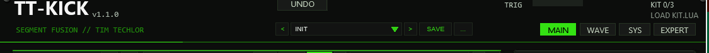
04The three segments
| Lane | Role | Recommended (REC) | Synth engine |
|---|---|---|---|
| S1 · TRANSIENT | Attack / click | 0–30 ms | Click oscillator + noise burst |
| S2 · BODY | The punch | 5–150 ms | Pitch-envelope oscillator (core) |
| S3 · TAIL | Room / sub tail | 10–1500 ms | Sine + drift + room component |
The lane header carries the segment title plus Mute, Solo and MAXimize. Below it sit the SYNTH|SAMPLE switch, REV (reverse), CAP (record into the slot, section 07), RAND (randomize the lane within musical bounds — CTRL+click resets it to INIT) and a GAIN fader (0–200 %). The START and LENGTH flags cut the sample window — on SYNTH lanes there is no start offset and the LENGTH flag sets the window duration against a per-type maximum (60 ms transient / 500 ms body / 2000 ms tail). The crossfade diamonds (0–100 ms) at the window edges edit two independent fades: the right-edge diamond is the lane's XF-OUT (its exit fade into the next segment — on the TAIL it doubles as the kick's fade-out), the left-edge diamond of lanes 2/3 is that lane's XF-IN (the entry side of the same boundary). A shared boundary fades over the minimum of the previous lane's XF-OUT, the following lane's XF-IN and both window durations. Empty or unplayable slots simply drop out of the chain — the remaining segments play on.
The status line under each waveform shows the file name plus
S/L/XF values on SAMPLE, or the engine name plus
F/C/XF values on SYNTH (section 06) — with the
DUR (REC) check right-aligned in the same row. A muted lane is
dimmed, title included; an engaged lane filter warns
FILTER ON in the compact view (the knobs
only exist in EXPERT mode). White lines inside a box are
the playheads of sounding voices; a kick trigger fires up to three chained
spans, and the 24-voice pool keeps about 8 kicks overlapping before stealing —
enough for long tails at every player rate up to 1/8 at 174 BPM
(stolen voices get a 64-frame fade-out, never a hard cut).
Mute / Solo (M / S)
The M and S buttons in every lane header are always visible — also on collapsed strips. Mute takes its lane out of the kick chain; Solo leaves only the soloed lanes playing (any solo drops all non-soloed lanes like mutes, and mute wins over solo on the same lane). The FUSION row follows the gate — it closes the chain without the excluded lanes — while each lane's own DUR readout stays. The gate applies to triggered kicks only: CAP recording and lane audition ignore it, so a muted lane can still be captured into or previewed. CTRL+click returns a button to its default (off). Solo lights warning-orange when active.
Lane maximize (MAX)
MAX blows one lane up to fill the whole lane area: its controls move into a toolbar row and the waveform box grows to full width and height for precise flag, diamond and zoom work (the EXPERT knob row stays on board). The other two lanes collapse to thin strips showing title, M/S, MAX and a short SYNTH/SAMPLE + DUR info. Click a strip — or its own MAX — to switch the maximized lane; MAX on the big lane returns to the three-lane view. The state is a pure view setting: it is not saved with the project and never enters the undo ring.
EXPERT mode — the knob row
The EXPERT switch next to MAIN|SYS (saved with the project, kept
across presets and undo like the tooltip switch) reveals an indented row of
eleven knobs under every lane. The waveform box shrinks to make room. Slots
0–3 hold the lane's engine parameters on SYNTH lanes —
F0/F1 (logarithmic sweep start/target, per-type ranges), then
NOISE on S1, CURVE on S2 and DRIFT+ROOM on S3 —
and read NO ENGINE KNOBS (SAMPLE) on SAMPLE lanes. Slots 4–10 are
the same on every lane and mode: PITCH (±24 st detune), LEN
(window length — SYNTH shows milliseconds, SAMPLE per-mille of the slot),
OFFSET (start of the lane on the time axis, in ms — see the next
section), XF-IN and XF-OUT (the split boundary fades, 0–100 ms;
XF-IN on S1 is locked dim — the chain head has no predecessor and the
kick head always gets a short anti-click fade), and the lane filter
CUT/RES (below). Drag a knob vertically (120 px = full travel,
SHIFT = fine), CTRL+click resets it; all values are drawn under the knob and
freeze into the trigger snapshot like every span parameter.
The time axis and OFFSET
The three lanes sit on one output time axis. Without OFFSET, a lane starts where the lane before it ends, minus the shared crossfade of that boundary: the two overlap by exactly the fade length. OFFSET moves the start of a lane from that place, in milliseconds with 0.1 ms steps (default 0).
- Positive — the lane starts later. If the offset is bigger than the
crossfade, a gap of silence opens between the two lanes (the earlier lane
fades out, nothing plays, the later lane fades in). The fade lengths stay the
ones of the boundary (
min(XF-OUT, XF-IN, both durations)). - Negative — the lane starts earlier and overlaps the lane before it more than the crossfade alone would. It never starts before the lane before it. Where the lane before it is already short (for example S1 at 6 ms), a negative OFFSET on the next lane has nothing left to give.
- S1 (the head of the chain) has no lane before it: its OFFSET runs 0…+100 ms and delays the whole kick, silence in front. S2 and S3 run −100…+100 ms.
- Every lane after a moved lane moves with it, because each one is placed relative to the end of the one before. The total length shown in FUSION and WAVE includes the offsets, and FIT LENGTH TO counts them.
- For synth lanes the hand-over of the oscillator phase uses the frames the earlier lane has really played at the start of the next one, so a phase-continuous boundary stays phase-continuous with any OFFSET.
With OFFSET 0 on all lanes the kick is bit-for-bit the same as before the control existed, and projects saved without it load with 0. OFFSET is part of the lane state: it is saved with the project, restored by undo, and stored in user presets (factory kicks are all at 0; the 14 lane presets and RAND leave it alone, while the lane preset INIT and CTRL+click on RAND reset the whole lane, OFFSET included). You can also drag it in the wave: in the WAVE page and in FUSION EXPAND every lane has a small start grip (a triangle) at the foot of the lane's start, one step higher per lane because S1 and S2 often start at the same point. Drag it sideways to set OFFSET, double-click or CTRL+click it for 0.
Lane filter (CUT / RES)
Each lane carries its own resonant low-pass — a 2-pole TPT
state-variable design (the same math as the master FILTER stage):
CUT sweeps 40 Hz–16 kHz exponentially, RES drives Q 0.5–8.
The knobs only exist in EXPERT mode, but the filter keeps working in the
compact view, which then flags LANE FILTER ACTIVE - SEE EXPERT.
At the default (CUT fully open = 16 kHz, RES = 0) the stage is
bypassed bit-exactly — no processing happens at all; just below the
stop the wet amount eases in quadratically, so there is no level jump at the
top of the travel. The state lives per voice: overlapping hits of the
same lane never push each other through the filter and stay click-free —
that is what distinguishes it from the master FILTER, which sees the summed
output.
DUR / REC — the duration check
Every lane prints DUR <ms> (REC <lo>-<hi>)
right-aligned in its status line: the segment's effective output duration —
at reference pitch ROOT — next to the recommended range for its role (the REC
column above); on a tight layout the (REC …) part shortens away
first. DUR is green inside the range and orange outside; a slot that
cannot play shows DUR -. On the INIT preset all three lanes read
green: the factory synth windows are 6 / 100 / 280 ms
(S1/S2/S3), inside their recommended ranges.
The FUSION row
Below the lanes, the FUSION row shows the kick exactly as the chain
builds it at the ROOT note: the segments in sequence on the output time axis,
the equal-power crossfade overlaps shaded behind them. It draws the
real waveform, rendered from the lanes (see The wave view below);
until the first preview is ready it shows envelope bars. The header prints the total length (FUSION - 312.5 MS).
The row mirrors the M/S gate — muted or non-soloed lanes drop out and the
chain closes without them. Three switches in the header choose the view:
- SUM (default) — the finished kick as one wave. Each moment is coloured by the lane that is loudest there, so you see where S1 hands over to S2 and S2 to S3.
- STACK — one row per lane at its real place in the kick, the sum underneath. The crossfade zones run through all rows.
- EXPAND — FUSION fills the whole lane area (the lanes are hidden while it is on). In SUM you get one big wave with the next player hit as a red line, in STACK tall rows with M / S, OPEN (back to MAIN with that lane maximized), DUR and GAIN per lane. In both you edit right in the wave: drag a lane's END flag to change its length (the lanes after it move along), drag a diamond at a lane border to set that crossfade (it sets XF-OUT of the earlier lane and XF-IN of the later one to the same value, 0–100 ms) and the diamond at the end for the fade-out of the kick. the start grip (triangle at the foot of a lane's start) moves that lane in time (OFFSET, double-click resets it). CTRL+click resets a flag, diamond or grip. A click on the SUM wave plays the kick, a click on a STACK row plays that lane.
FIT LENGTH TO / FIT NOW sit in the row's header. Choosing a note (1/1, 1/2, 1/4, 1/4T, 1/8, 1/8T, 1/16) scales the lane lengths of all playing lanes once, with one common factor, so the whole kick — the total shown in the title — lasts that note at the current host tempo (120 BPM if none is reported). The proportions between the lanes stay as they are and the crossfades are respected. Synth lanes stop at their type maximum (60 / 500 / 2000 ms), sample lanes at the end of their slot, so very long notes may fall short. Later tempo changes do not rescale anything; FIT NOW applies the selected note again after you edited lanes or changed the tempo. Muted lanes are left untouched, and the change is a normal undoable edit.
AUTO (left of FIT LENGTH TO, saved per instance; not the OPTIONS zoom) fits automatically: while it is on, every preset load — arrows, list or user slot — fits the new kick to the selected note at the current tempo, in the same undo step as the load. Switch it off to keep presets exactly as stored.
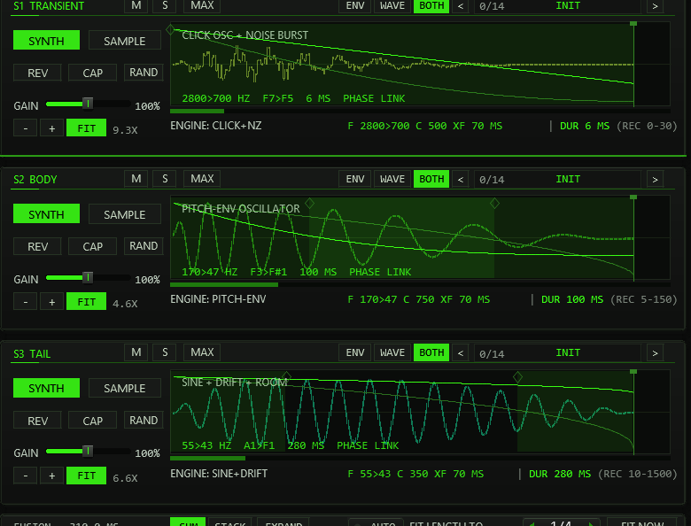
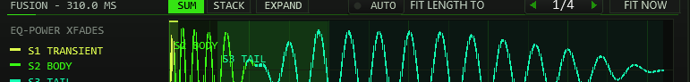
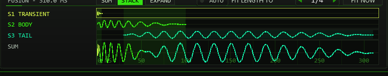
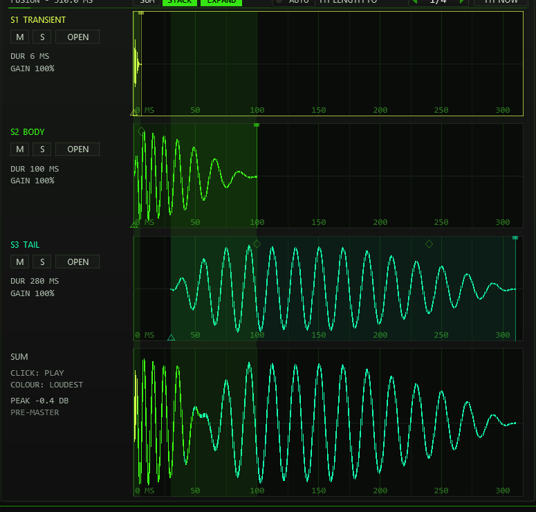
The wave view
TT-KICK shows the real waveform of every lane and of the finished kick. It is rendered in the background from the lanes, with the same chain, crossfades and phase hand-over as the sound, at velocity 127 and at the ROOT note — before the master section, so FILTER, DRIVE, CLIP and OUT GAIN are not in it (the OUT SCOPE shows the output after them). No hit is needed: after every edit the preview renders again within a fraction of a second (a 0.3 s kick takes about 0.25 s, long tails up to about 0.5 s). It does not change the sound in any way. The three lanes keep their colours everywhere — S1 lime, S2 the accent colour, S3 mint in the ACID scheme; the colours follow OPTIONS > colour scheme.
Lane boxes: ENV / WAVE / BOTH
Every lane header has three small switches for its wave box. ENV shows the pitch and level curves of a SYNTH lane, the sample of a SAMPLE lane. WAVE shows the rendered wave of this lane, as it sounds inside the kick (with its fades). BOTH (default) draws the wave dimmed with the curves on top. The wave sits in the lane window, so zoom, skew, pan and the flags work as before; a reversed lane shows its wave the way the window plays. A muted lane still shows its wave, dimmed, rendered on its own.
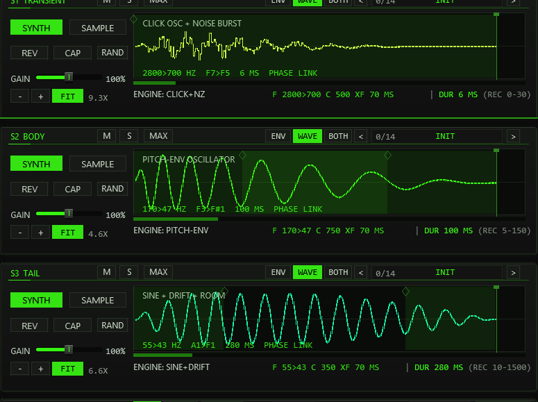
The WAVE page
The WAVE tab in the header (between MAIN and SYS) shows the whole kick on one time line, like a dedicated kick editor; the player, master rack and scope stay on the right.
- The wave — S1, S2 and S3 sit as coloured bands behind the kick. SUM draws the finished kick coloured by the loudest lane, LAYERS the three lane waves on top of each other. A red line marks the next hit of the player at its RATE and the host tempo — you see at once whether the tail runs into the next kick.
- Editing — END flags and crossfade diamonds work as in FUSION EXPAND. A click selects the lane under the mouse and plays the kick.
- Zoom — the mouse wheel zooms around the pointer, SHIFT+wheel scrolls, dragging the background scrolls a zoomed view, FIT shows the kick and the next hit again. The overview strip under the wave shows the visible part as a frame; click or drag it to move there.
- LUPE — a magnifier for the first 20 ms (the transient and the S1 > S2 crossfade, only a few pixels wide on the full kick). Switch it off with LUPE; it hides while you are zoomed in closer than 60 ms.
- Segment strip — below the wave, the tabs S1 / S2 / S3 pick a lane. The strip has the lane's own controls (SYNTH/SAMPLE, REV, CAP, RAND, GAIN, M / S, the lane preset browser), its readout and DUR, the EXPERT knob row (always open here) and the lane alone on its own time scale, normalised to its peak. START / END / XF / PEAK on the left tell where the lane sits in the kick. The PEAK readout under the wave is the level of the rendered kick before the master; above 0 dB it turns orange.
All view switches (ENV/WAVE/BOTH, SUM/STACK, EXPAND, LAYERS, LUPE and the page) are saved per instance and never create an undo step. Lengths and crossfades you drag in the wave are normal, undoable edits.
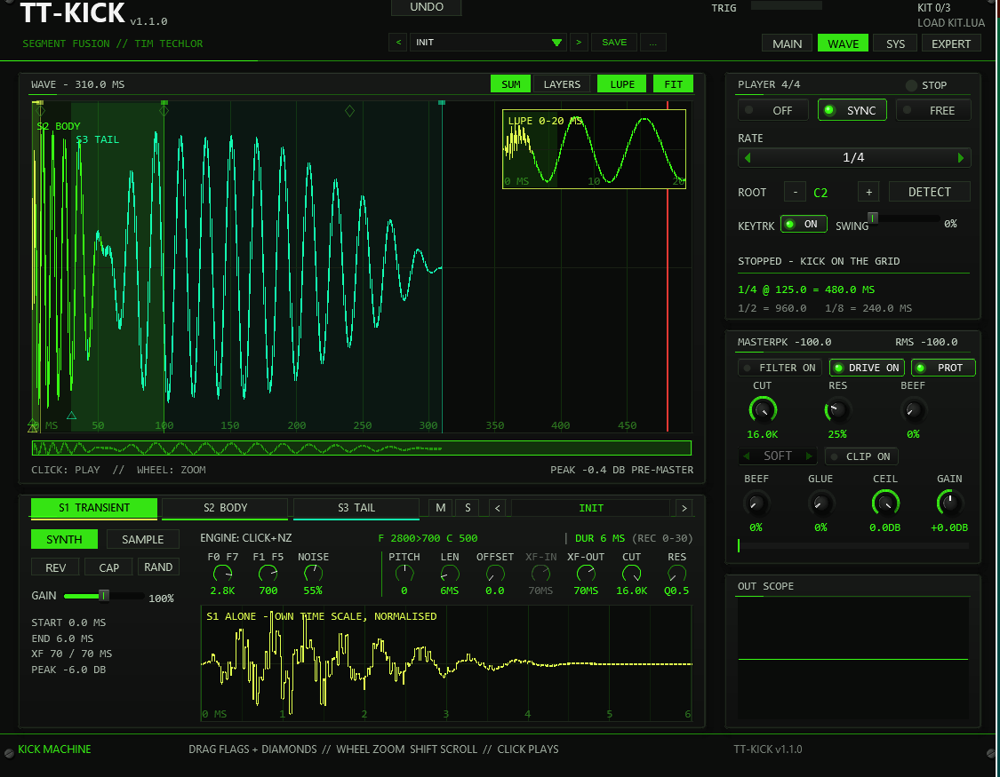
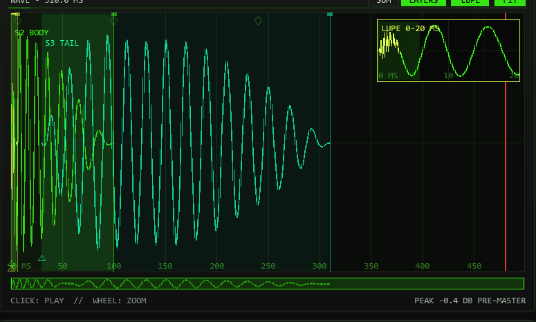
05Editing conventions
- Drag the START/LENGTH flags in a lane to cut the sample window. START is SAMPLE-only — on SYNTH lanes the LENGTH flag sets the window duration against the type maximum.
- Diamond markers set the crossfades: the diamond at a window's right edge is that lane's XF-OUT (its fade into the next segment), the diamond at the left edge of lanes 2/3 is that lane's XF-IN — the same boundary handled from the entry side (0–100 ms each; the boundary fades over the smaller of the two).
- Lane zoom: every lane has its own zoom bar — under GAIN in the normal view, at the right end of the tool row in a maximized lane. - and + zoom out and in around the middle (1× to 64×), the readout next to them shows the factor. FIT (ZOOM FIT, lit while on) makes the view follow the lane window: the window fills the box with a small margin and the view adapts when LEN or START change. Any manual zoom or scroll switches FIT off; click it again to snap back. While zoomed, a scroll bar under the wave moves the view (click to jump, drag the thumb).
- Mouse wheel zooms horizontally around the pointer (up to 64×),
CTRL + wheel scrolls a zoomed view, Shift + wheel skews the
waveform vertically (up to 16×) — a
Z/SKreadout in the box corner of a SAMPLE lane reports the factors — and dragging the dimmed background pans a zoomed view. - Millisecond ruler: every wave box — the normal lanes, a maximized lane and the FUSION row — draws vertical scale lines in the background. The tick spacing follows the zoom on a 1-2-5 ladder (0.5 / 1 / 2 / 5 / 10 / 25 / 50 / 100 / 250 / 500 / 1000 / 2500 ms, at least 55 px apart), with fainter half-alpha intermediate lines when there is room. Integer ms labels sit at the bottom edge, and the lane start is drawn as the stronger line. The ruler shares the waveform's mapping, so zoom, skew and pan move content and scale together.
- Click the waveform to select the segment (acid frame) — releasing without a drag auditions it solo; on SYNTH lanes you hear the engine itself. A pan drag never fires the audition, and the audition ignores the M/S gate.
- Drag an EXPERT knob vertically to change it — the value follows the movement relative to where you grabbed it (120 px = full travel); holding SHIFT gives a 4× finer ratio. A click without movement changes nothing. The mouse wheel steps it too: one unit per notch on short ranges (PITCH, XF-IN/OUT, the narrow F0/F1 ranges), 2 % of the travel per notch on the long ones (LEN, CUT, RES, NOISE/CURVE/DRIFT/ROOM, wide F0/F1 — on the log scale).
- Mouse wheel on the other controls: the master knobs and the lane GAIN / SWING sliders move 2 % of their travel per notch, the RATE and CLIP combos step one entry, the lane preset name box steps the lane bank.
- CTRL+click resets almost everything: all master and lane faders (incl. SWING), the START/END flags, the crossfade diamonds, every EXPERT knob and the M/S buttons return to their default — one shared default table feeds both the reset and the INIT state, so they can never diverge. CTRL+click on RAND resets the whole lane to INIT.
- Hover any control for a short tooltip in a floating panel (English, up to three lines — CTRL lines highlight in acid). Every control of the front has one, including the preset bar, the OPTIONS button and the read-only displays (trigger LED, kit status, player status, meters, scope, FUSION row). Tooltips stay out of the way while you drag and can be switched off with OPTIONS > TOOLTIPS ON / OFF (saved with the project); the SYS page's INTERFACE section only shows that state.
- Edits never disturb a sounding kick — the span parameters (window, fades, gain, pitch, curve) are frozen at trigger time and apply to the next hit. The exception are the small synth parameters NOISE, DRIFT and ROOM (section 06), which are read live.
- Every ended drag or button edit pushes one undo state (section 11), and so does every mouse-wheel step that changes a value; pure view changes (zoom, skew, pan, lane selection, page, lane maximize, the wave view switches ENV/WAVE/BOTH, SUM/STACK, EXPAND, LAYERS, LUPE) never create one. Each pushed state also gives REAPER an undo point (Edit FX), so the project is marked as changed.
06Synth engines & phase
The three engines are tuned to their segment role:
- S1 TRANSIENT — click oscillator + noise burst: a sine click with a fast internal decay, blended with a noise burst. The noise is a deterministic position hash, so every trigger renders bit-identically.
- S2 BODY — pitch-envelope oscillator: the core of the kick; the frequency glides from F0 to F1 across the window along the curve set by C (0–1000 ‰ → exponent 0.125…16; 500 ≈ the classic kick sweep).
- S3 TAIL — sine + drift + room: a sustained sine under a slow amplitude drift (≈5–14 Hz), plus a room component — a slightly detuned beating copy and a noise share that lives in the decay.
A SYNTH lane draws the engine's frequency trajectory F0 → F1
inside the window (bright curve) over its dim internal amplitude envelope,
labelled CLICK OSC + NOISE BURST, PITCH-ENV OSCILLATOR
or SINE + DRIFT + ROOM. The readout
<F0>><F1> HZ <note>><note> <dur> MS PHASE LINK sits
in the box, and the status line below shows
ENGINE: <name> F <f0>><f1> C <curve> XF <ms> MS.
PHASE LINK is the phase-coherence badge: chained synth segments share one phase trajectory — the oscillator phase is a closed-form function of position, so a successor starts at the exact phase its predecessor holds at the boundary and the fusion stays click-free and tight. The chain head, and a synth segment following a sample, start at phase 0 by convention; a per-segment phase offset (PH) exists in the serialized state. A reversed synth segment runs the same trajectory backwards. Keytrack and the played note scale the engine frequencies — window durations stay absolute in time. The per-lane PITCH knob (section 04) detunes a single engine ±24 st on top of keytrack.
F0 A4 for
440 Hz, with C4 = MIDI note 60 as in the ROOT display; the value below stays in Hz), the per-engine control (NOISE / CURVE / DRIFT + ROOM), PITCH,
LEN, XF-IN/XF-OUT and the lane filter CUT/RES (section 04). Only the per-segment
phase offset (PH) is serialized without a control — presets and undo write it,
the front deliberately has no knob for it. All lane parameters apply from the
next hit; the exception are NOISE (S1) and DRIFT / ROOM (S3),
which the engine reads live: turning them while a kick rings changes that kick
at once.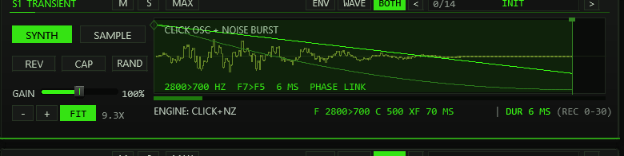
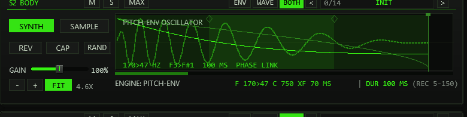
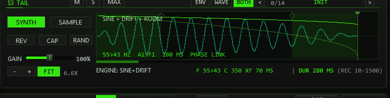
07Capture (CAP)
Each lane carries a CAP button (next to REV) that records the plug-in's audio input straight into that lane's sample slot — no file dialog, no disk, no Lua. Capture ignores the M/S gate: a muted lane can be recorded into, and the audition of its result plays regardless.
- Click CAP on a lane — the waveform box blinks
REC ARMED - PLAY YOUR SOURCEand the input is now monitored at the output so you can aim. - Play the source into the plug-in's audio input (the track's input or items before it on the track). Recording starts when the mono input exceeds −40 dBFS for three consecutive samples — the two samples just before the threshold crossing are kept, so the attack is not cut.
- Recording stops after 8 s, after 1 s of silence (with at least 0.2 s captured), or at the bank limit at very high sample rates — the silent tail is trimmed back, a 32-frame fade is applied, and the lane switches to SAMPLE automatically.
- Clicking CAP again on the armed/recording lane aborts (discards). Arming another lane moves the arm; a running recording is never interrupted by a different lane.
Outside an armed/active capture the input is not passed through and the
instrument stays bit-identical to a pure kick generator — silent on MIDI-only
tracks. If the extended memory is unavailable (embedded/limited hosts) the
button shows N/A instead of arming.
08Master rack
| Stage | Controls | What they do |
|---|---|---|
| FILTER | ON · CUT · RES · BEEF | Resonant 24 dB/oct low-pass (two TPT state-variable stages): CUT sweeps 40 Hz–16 kHz exponentially, RES drives Q 0.5–14, and BEEF pulls the resonance peak up to three octaves below the cutoff — a bass-heavy bump while the HF rolloff stays. |
| DRIVE | ON · PROT · BEEF · GLUE | BEEF is a parallel bass-band drive (one-pole split ≈140 Hz into a level-matched waveshaper, up to ~+27 dB into the knee); GLUE is a sum saturation on top. PUNCH PROTECT keeps the dry remainder — punch and mids — out of the shaper; switched off, the band morphs to the full signal for classic all-over drive. GLUE deliberately touches everything, so bit-exact transparency needs BEEF=0 and GLUE=0. |
| CLIP | ON · SOFT/HARD · CEIL | Final clipper as a creative tool: SOFT is a true tanh knee (linear below 0.7, continuous slope), HARD a flat clamp; CEIL sets the ceiling −36…0 dBFS and is enforced explicitly. The SOFT / HARD selector is drawn dimmed while CLIP is off (it has no effect then). |
| OUT | GAIN · meters · scope | Output level −24…+24 dB with an exact 0 dB centre detent; peak/RMS metering (~300 ms ballistics, the peak tick turns red on overs) and the OUT SCOPE — it always shows the post-chain output. No final limiter: the ceiling is the clipper's job. |
All stage switches and faders are click-free — every change glides over a ~20 ms slew, and bypassed stages keep tracking the live signal so re-engaging never jumps. Every fader resets to its factory value on CTRL+click (the shared default table, section 05).
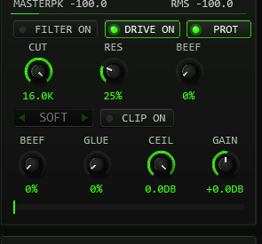
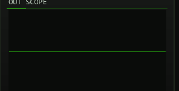
09Player & MIDI
- MIDI: a note-on triggers the whole segment chain — the note sets the pitch relative to ROOT (when keytrack is on), velocity sets the level. Note-off is ignored (one-shot), CC 120/123 kill all voices, and everything else (CC, pitch bend, clock) passes through.
- PLAYER: the built-in 4/4 player fires the chain at ROOT pitch on
the rate grid — 1/1, 1/2, 1/4 or 1/8 — at a constant velocity
(every kick equally loud). SYNC follows the project timeline: it
plays only while the transport runs and re-anchors on real position jumps
(
SYNCED BAR n.m). FREE RUN ignores the transport state — it still runs at the host tempo (FREE RUN n BPM, 120 BPM if none is reported). - SWING shifts the off-grid (odd) eighths later by SWING/200 of an eighth — 66.7 % lands exactly on the triplet point (TT-303 convention: on-grid eighths stay strict). At rates 1/1–1/4 every hit sits on an on-grid eighth, so swing is deliberately inaudible there. CTRL+click on the fader returns it to 0 %.
- BPM→ms reference: the panel prints a live note-length table for the
host tempo —
1/4 @ 125.0 = 480.0 MSwith the1/2and1/8values below — so segment lengths and crossfades can be tuned against the groove. - ROOT & DETECT: ROOT is the keytrack base (−/+ steppers with a
note readout). DETECT is a one-shot autocorrelation of the BODY
segment — the loaded window on SAMPLE, the settled fundamental at the
window's end on SYNTH. The result line reports the source (SMP/SYN), the
detected note, the cent offset, Hz and a CONFidence percentage;
ROOT is written only at CONF ≥ 30 %, otherwise the panel answers
NO BODY SIGNALinstead of guessing. An octave guard picks the first strong correlation peak rather than a subharmonic. - KEYTRK: the global keytrack switch — OFF pins every note to ROOT
(factor 1 on any key), and the header flags
KTRK OFF. - Header readouts: a TRIG LED with the last note and its source
(
MIDI/PLAYER/LANE), and the kit state (KIT n/3).
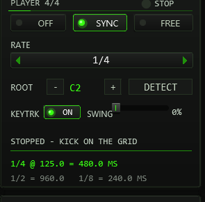
10Sample kits & loaders
JSFX has no file dialogs, so kit assignment runs through companion
ReaScripts. A loader sends the kit to one TT-KICK instance:
the TT-KICK window that has (or last had) the focus, otherwise the first TT-KICK
on the selected track. So every instance can carry its own kit. The script waits
for the instance to confirm (it then reports the track) and adds one undo point
TT-KICK: assign kit. If the instance does not answer (audio engine
stopped, FX bypassed or offline), it loads the kit as soon as it runs again.
Each file is resampled to the project rate, mixed to mono and capped at
20 s per slot. The assigned paths travel inside the project — after a reload
the WAVs are pulled from the stored paths again. A new instance starts without a
kit (it plays the synth lanes). The protocol carries 255 characters per path: a longer
path is rejected with a message naming the slot (that slot keeps its previous
sample), and if no slot can be loaded nothing is sent and no undo point is set.
| Action | Workflow | Notes |
|---|---|---|
TT-KICK Load Kit | Three file dialogs — pick one WAV per slot (1 = TRANSIENT, 2 = BODY, 3 = TAIL) | Cancelling a dialog keeps that slot; cancelling all three changes nothing. Exact control per slot. |
TT-KICK Load Kit (Folder) | Pick any one file inside a kit folder — the script scans the folder (*.wav/*.aif/*.aiff) and maps files to slots by name, then asks for confirmation | Stem matching: trans/click/att → TRANSIENT, body/mid/punch → BODY, tail/sub/room/end → TAIL; leftover slots fill alphabetically, surplus files are ignored (listed in the confirmation). Copies the kit files into the folder and pushes it onto Recent Kits. |
TT-KICK Load Kit (from Items) | Drop up to 3 audio files onto a track as items, select them, run the action — selection order becomes slot order (track, then position, then lane) | MIDI items and items without a file source are skipped; the confirmation lists the mapping before writing. Pushes the slot-1 folder onto Recent Kits. |
TT-KICK Recent Kits | Zero-dialog re-load: a menu lists the last 8 kit folders and activates the chosen one | Works across projects; loads into the target instance like the other loaders. Folders whose copy of tt-kick-kit.bin is missing are greyed out; kits assigned via the plain Load Kit action are not listed (it writes no folder copy). |
Install the scripts once via Actions → Show action list → New action → Load ReaScript, then run them from the action list (or bind them to keys/toolbar).
LOAD ERROR. Keep
paths reachable: the loader stores absolute paths, so moving the WAVs breaks
the kit on next load.11Presets, undo, system page
Preset bar & user bank
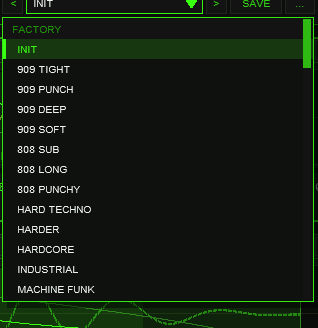
OPTIONS: < name > SAVE .... The name opens the list with the FACTORY (INIT plus 44 kicks) and USER (32 slots) sections.The bar loads and saves the whole kick in one step: all lane and segment
data of the three lanes (including the lane preset assignments), the master rack
(filter, drive, clipper, output) and the player head (rate, sync, root, swing,
keytrack) — exactly what a factory preset replaces. Not part of a preset: the kit
paths (sample assignments stay), the colour scheme (OPTIONS), the player
ON switch, the page, the lane selection and the TOOLTIPS / EXPERT switches. The
lane view (zoom, skew, scroll position and ZOOM FIT) is stored with a user
preset and comes back when you load it, but changing it never marks a preset as
modified. Factory presets and INIT open with ZOOM FIT on all three lanes. Presets load with UNDO like every other edit. A running
player keeps running when you load a factory preset or INIT; a factory preset still sets rate, sync, swing and
keytrack, but leaves your ROOT note alone (it belongs to your kit and the DETECT result, not to the sound design); INIT is the way back
to the factory state and still resets ROOT to C2. User presets load ROOT exactly as saved, and so does a project.
With keytrack on, MIDI notes are transposed relative to ROOT: the factory presets are tuned so that C2 plays the
designed pitch, with another ROOT it is the ROOT key that does. The built-in player always fires at ROOT and is not affected.
| Control | Function |
|---|---|
< / > | Previous / next preset: INIT and the 44 factory kicks first, then the used user slots; wraps around and loads immediately. |
| Name field | Opens the list: FACTORY (INIT + 44 kicks) and USER (32 slots, empty ones show - empty -). Mouse wheel scrolls, click loads, a click outside just closes. A * behind the name means the state differs from the loaded preset. |
SAVE | Saves the current kick into the selected user slot; with a factory preset (or none) selected, into the first free slot. A name box opens (up to 24 characters, default User 02): type, Enter or OK saves, CANCEL or a click outside cancels. |
... | RENAME, COPY (into the next free slot) and DELETE (a second click confirms) for the selected user preset. |
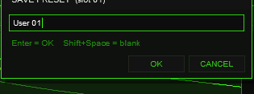
Where the user bank lives. Plug-ins cannot write files, so the 32 user slots are part of the
plug-in state: they are saved with the project, with FX-chain and track-template copies, and in every
REAPER preset of this plug-in (the + button in the FX window toolbar). To take your bank to
another project or computer, save a REAPER preset once (+ → Save preset) and load it there: the
whole bank comes with it.
Typing names. REAPER keeps Space for the transport, so type Shift+Space for a blank.
Depending on your REAPER settings Esc closes the whole FX window; use CANCEL instead. (The + menu of the
FX window also has Send all keyboard input to plug-in.)
The factory bank holds INIT (the factory state) plus 44 designs in eight families: 909 (7), 808 (4), HARD (6), RUMBLE (5), MINIMAL (6), DEEP (5), ROLL (4) and CHAR (7 — glide, reverse, warehouse and classic characters). Every one of them is purely synthesized — license-free, and they sound with no kit loaded; each candidate has a short transient, a pitch-swept body and a tail designed for its style. Level and mix balance were checked on real REAPER renders, but a kick always has to work with your bass line, so judge the presets in your own arrangement. On the SYSTEM page the FACTORY PRESETS panel still groups the collection into tabs: pick a family, click a name to load it (the bar follows).
Choose a tail for the groove: ROLL and dry MINIMAL sounds leave short gaps for fast patterns; 909 and CLUB sounds are balanced starting points. The long 808, DEEP, RUMBLE and REVERSE designs are intentional effects. At faster tempos or with a continuous bass line, shorten S3 TAIL or make space for it in the bass arrangement. REVERSE BLOOM and REVERSE RISE run S3 backward. Check the kick with bass and hats at your actual project tempo.
Factory kicks at a glance
| Family | Kicks |
|---|---|
| 909 (7) | 909 TIGHT, 909 PUNCH, 909 DEEP, 909 SOFT, MACHINE FUNK, 909 SLAM, 909 CLICKY |
| 808 (4) | 808 SUB, 808 LONG, 808 PUNCHY, 808 TIGHT |
| HARD (6) | HARD TECHNO, HARDER, HARDCORE, INDUSTRIAL, HARD SCOOP, NOISE INDUSTRIAL |
| RUMBLE (5) | RUMBLE DEEP, RUMBLE FAST, RUMBLE DRY, RUMBLE DARK, RUMBLE SUB |
| MINIMAL (6) | MINIMAL CLUB, DUB DRY, CLUB PUNCH, BERGHAIN, MINIMAL DRY, CLUB WARM |
| DEEP (5) | SUB FOCUS, DEEP MELODIC, SOFT DEEP, SUB RUMBLE, DEEP PUNCH |
| ROLL (4) | ROLL TIGHT, ROLL SHARP, ROLL DEEP, ROLL SOFT |
| CHAR (7) | ACID GLIDE, REVERSE BLOOM, WAREHOUSE, CLICK MINIMAL, TECHNO CLASSIC, WAREHOUSE TIGHT, REVERSE RISE |
Every factory kick as a waveform of its first 900 ms, grouped by family, with the measured tail length (time until the hit has dropped 40 dB below its peak) and the sub frequency of the body. The numbers are measured on the rendered hit, they are not preset settings.


The names describe a style, not a promise: use them as starting points and bend them with the lanes, the EXPERT knobs and the master rack.
Lane preset browsers
Every lane header carries its own small preset browser —
< n/14 NAME > on the right. The three lanes have three
independent banks of 14 lane presets each, one level below the factory kicks:
S1 holds attacks and clicks (NEEDLE, RIM CLICK, METAL EDGE …),
S2 tonal bodies (TIGHT 909, ACID GLIDE, 808 ROUND …) and S3 tails
(STUB, TECH TAIL, HEAVY SUB …). The banks are ordered by character: S1 from dark to
bright, S2 and S3 from short to long. The arrows step through the lane's bank,
the mouse wheel steps too, and clicking the name opens the lane's list:
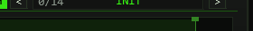
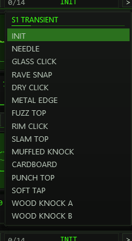
A lane preset is a recipe for exactly that lane: it sets the 16 engine
parameters of the segment (level, pitch, length, fades, phase, sweep, curve,
noise/drift/room, the lane filter) and switches the lane to SYNTH — your sample
window, MUTE/SOLO and everything else stay untouched; the lane's zoom switches
to ZOOM FIT so the new window is in view.
Position 0 = INIT resets the lane to the factory state (CTRL+click on
the name does the same). After loading, the usual edit rules apply: dragging
any lane control (or running DETECT) adds an asterisk * in the
name box — the entry is modified since load. The starred state survives save
and reload, and UNDO walks lane preset changes back like any other step.
The whole state rides in @serialize (blob 'KICK' v8, 994 words, followed by the user bank).
UNDO
(header and SYSTEM page) walks back through the last 20 edit states: a
snapshot is pushed when a drag or a button edit ends — preset changes
included. Lane view (zoom/skew/pan, maximize), segment selection, the current
page and the interface switches never enter the ring, and there is
deliberately no redo.
The SYSTEM page (MAIN|SYS tabs in the header) hosts the factory preset
row, the undo depth readout (n/20 SAVED), a short export guide,
the INTERFACE section and the status block. INTERFACE shows the
TOOLTIPS ON/OFF state (switched in the OPTIONS box; saved with the project, default on) next to a compact recap of the editing conventions — hover hints, CTRL+click reset,
RAND and MAX. Both interface settings are pure view settings: EXPERT (header)
and TOOLTIPS are serialized but kept out of the undo diff and survive preset
changes untouched. The status block lists sample rate, serialize format,
sample RAM incl. the undo head, kit slots, last trigger source and note,
player/swing/keytrack state — plus a navigation hint and build info.
slider63 = root
note, slider64 = last loaded factory preset index. The export
action uses them to pitch and name the rendered item. Two hidden request
parameters take data from scripts (Lua → FX) for exactly one instance:
Kit request (slider 70, used by the loader actions) and
Lane request (slider 71): a script writes the 16 sound parameters of
up to three lanes (the lane preset format) plus the lane's OFFSET in ms (one more
value per lane) to shared memory and sets the
parameter to a new serial number. Values are clamped to the lane ranges, the
import is one undo step, and an old value (project reload, undo, copied
instance) is never applied again.12Exporting a kick
Select the track holding TT-KICK, put the edit cursor at the start (or make a
time selection), then run TT-KICK Export Kick.lua from the action list.
The script fires a single trigger note at the current ROOT pitch across the
export range — the time selection, or four bars from the cursor — and renders
it in place through the track's FX chain ("Item: apply track/take FX"). The
resulting audio item is named TTKICK_<preset>.wav after the
last loaded factory preset (kick as fallback): the REAPER-native
equivalent of drag & drop export — drag the item wherever you need it.
Cursor position, time selection and your item selection are restored.
13Options / Color
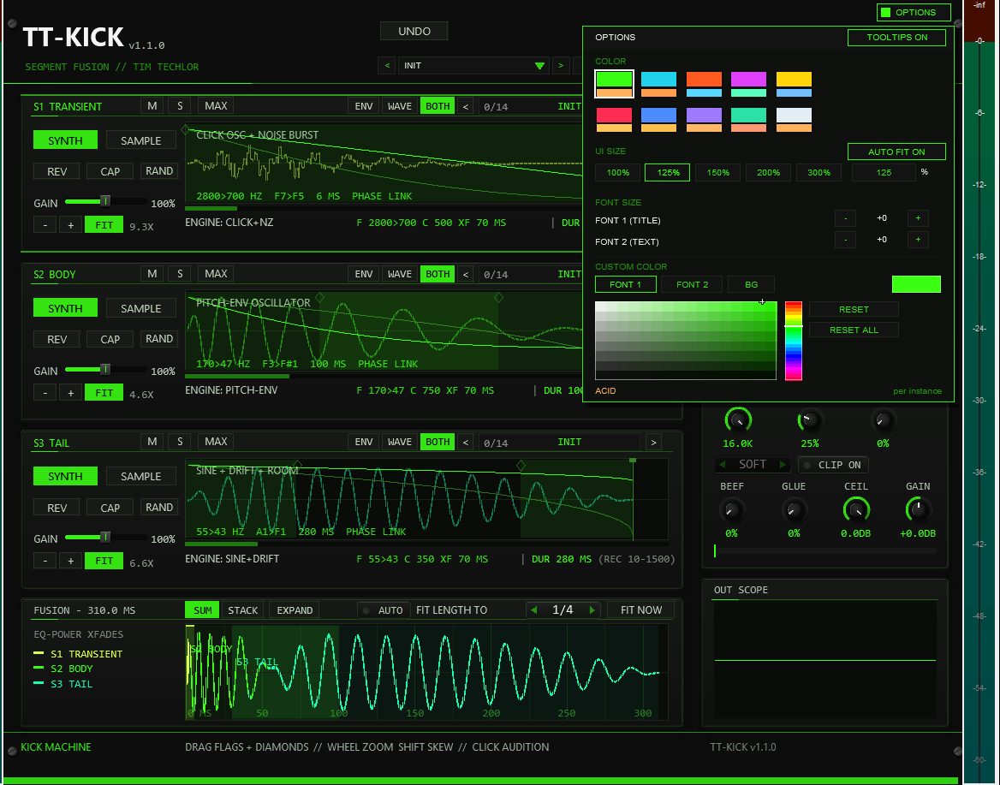
OPTIONS in the header (left of MAIN | SYS | EXPERT), then a swatch. Below the schemes sit the FONT SIZE steppers and the CUSTOM COLOR picker. A click outside the box closes it.Options / Color. The OPTIONS button opens the box; COLOR offers ten schemes:
ACID, CYAN, ORANGE, MAGENTA, YELLOW, RED, BLUE, VIOLET, MINT and ICE. A scheme changes the accent colour (active switches,
knob rings, waveforms, LEDs), the warning colour (a DUR outside its target range, SOLO) and, for RED to ICE, the slightly tinted panel
background of the whole front at once — on both pages (MAIN and SYS) and in EXPERT mode. The choice applies
per plug-in instance, is saved with the project and with FX-chain copies, and is not touched by factory presets,
lane presets, RAND or undo. The factory colour is ACID (the classic acid green). The colour is stored in the hidden
slider 65 (UI Color, 0–9); it is the third listed parameter after the two Lua mirrors.
TOOLTIPS ON / OFF sits at the right of the OPTIONS box's title bar. Every control of the front shows a tooltip after you hover it briefly; the switch turns them off for this instance and is saved with the project. The SYS page just shows its state.
FONT SIZE scales the two font slots independently: FONT 1 (TITLE) is the panel/headline
slot, FONT 2 (TEXT) feeds all four text slots — each steps −4…+8 around the kit
default (+0). CUSTOM COLOR overrides a scheme per target: pick FONT 1,
FONT 2 or BG (panel background) and drag the HSV field and the hue strip; the preview swatch
on the right shows the current pick, the label under the box names the active scheme. RESET clears the
selected target back to the scheme, RESET ALL clears every override and both font steps. Font steps and
custom colours are also per instance and ride in the same serialized style block — presets, RAND
and undo never touch them either.
Font steps above +2: the TT-KICK front has a fixed grid of rows; from step +3 on, texts would run into their neighbours. The front therefore draws with at most +2 for FONT 1 and FONT 2, even if OPTIONS is set higher (the setting itself is kept and shown as chosen). For a bigger front use UI SIZE, which scales everything together.
14Recipes & quick reference
Four ways to start
- From a factory kick. Load a preset from the family closest to your genre, press a note and look at the FUSION row. Change one lane at a time: S2 BODY decides the weight, S1 TRANSIENT the click, S3 TAIL how long the kick rings.
- Your own click on a synth body. Set S1 to SAMPLE and load or capture a short click, keep S2 and S3 on SYNTH. Cut the sample window with the START and LENGTH flags so it ends before the body takes over, then set the crossfade diamond between S1 and S2 until the hand-over is smooth.
- Fit the tail to the groove. Switch the player on, open the WAVE page and watch the red line: it marks the next hit. If the tail runs past it, shorten S3 or choose a note in FIT LENGTH TO and let AUTO keep every loaded preset in tempo.
- Record a source. Click CAP on a lane, play a hit into the track input and the recording lands in the slot by itself. Bounce what you want to keep with the Export action, because captures are not saved with the project.
Quick reference
| You want to… | Do this |
|---|---|
| reset a control | CTRL+click it (RAND: resets the whole lane to INIT) |
| change a value finely | SHIFT+drag an EXPERT knob |
| zoom a lane | - / + in the lane's zoom bar or the mouse wheel (up to 64×); FIT fits the lane window; CTRL+wheel or the scroll bar scrolls; SHIFT+wheel skews the wave vertically |
| hear one lane alone | Click its waveform, or use S (solo) |
| take a lane out | M (mute); CAP and the audition still work on a muted lane |
| see the finished kick | FUSION row; EXPAND for the large editable view |
| move a lane on the time axis (gap or more overlap) | OFFSET knob in EXPERT, or drag the lane's start grip in the WAVE page; double-click the grip for 0 |
| fit the kick to a note length | FIT LENGTH TO, then FIT NOW after later edits (AUTO does it on every preset load) |
| undo | UNDO in the header (20 steps, no redo) |
| type a space in a name | SHIFT+Space |
| take the user bank along | Save a REAPER preset of the plug-in (the + button) and load it elsewhere |
| hide the hints | OPTIONS → TOOLTIPS OFF |
15Release notes
TT-KICK 1.1.0 adds OFFSET per lane (see The time axis and OFFSET): the start of every lane can be moved on the time axis, in milliseconds, with an EXPERT knob and a grip in the WAVE page and FUSION EXPAND. At 0 the kick sounds exactly as in 1.0.x. TT-KICK 1.0.0 was the first release; the sound engine was verified by measurement, the front, the loader scripts and the state handling were checked in REAPER.
- Sound: three sequential lanes with phase-coherent synth engines or samples (loaded or captured live), equal-power crossfades, master rack with filter, drive and clipper, 24 voices, INIT plus 44 factory kicks, 14 curated lane presets per lane.
- Editing: EXPERT knobs incl. OFFSET, lane filter, mute / solo, RAND, lane maximize, 20-step undo, CTRL+click reset and tooltips on every control.
- Wave view: the real waveform of every lane and of the finished kick, FUSION SUM / STACK / EXPAND with draggable flags and diamonds, the WAVE page with the next player hit, LAYERS and LUPE; FIT LENGTH TO with AUTO.
- Workflow: built-in 4/4 player (SYNC / FREE RUN, swing), DETECT ROOT, 32-slot user bank in the project and in REAPER presets, loader actions per instance (Load Kit, Folder, from Items, Recent Kits) and the Export action; scripts can hand lane sounds to one instance through the hidden Lane request parameter (section 11).
- Front: ten colour schemes, font sizes, UI SIZE 25–400 % with AUTO FIT.
Known limits
- The per-segment phase offset (PH) is serialized and written by presets and undo; the front has no control for it.
- Capture is volatile (RAM only, never serialized) and capped at 8 s —
~7.3 s at 192 kHz, less at 384 kHz; the button shows
N/Aif the extended memory is unavailable. - Kit assignment needs the Lua actions — there is intentionally no in-plugin file
dialog. Kits loaded with the plain
TT-KICK Load Kitdo not appear in Recent Kits (no folder copy). The undo ring has no redo. - The wave preview renders a kick up to about 10 s; a longer chain is cut off in the preview only (the sound is not affected).
- A seek from a bar line that has just fired onto another bar line within 0.02 of an eighth (about 5 ms at 120 BPM) cannot be told apart from a loop wrap and counts as the same transition.
- With strongly overlapping lanes (long crossfades) the total length is not strictly monotonic in the FIT scale factor; FIT NOW then lands within about 0.5 ms of the nearest reachable length instead of exactly on the note.
- Layout and legibility below 100 % UI size are not tuned (AUTO FIT still works down to 25 %, the function is kept).
16Troubleshooting
- A loader reports that TT-KICK did not answer or found no TT-KICK — click into the TT-KICK window (or select its track) and run it again; the audio engine must be running.
- A loader says
Path longer than 255 characters— that slot was skipped and keeps its previous sample; move the WAV to a shorter path and load it again. EMPTY SLOT - ASSIGN WITH TT-KICK Load Kit.lua— the slot has no path;LOAD ERROR - NOT A READABLE WAV/AIFF— the assigned file is unreadable or the path moved; reassign via a loader.DETECT: NO BODY SIGNAL— the body is too quiet or toneless (confidence under 30 %);BODY TOO SHORT— lengthen the body window;LOADING - TRY AGAIN— a kit scan is still running.- Orange
DURvalues — the segment sits outside its recommended range; fine if deliberate. On INIT all lanes read green (the factory windows are 6/100/280 ms, inside their ranges). - Player shows
SYNC - WAITING FOR TRANSPORT— SYNC mode only plays while the transport runs; switch to FREE RUN for an always-on beat. CAPshowsN/A— the host denied the extended sample memory; capturing is unavailable, everything else still works.- A recording never starts — the input must exceed −40 dBFS at the plug-in's pins: check that audio actually reaches the track input or items before the FX (MIDI-only tracks carry no audio).
- A lane stays silent — check its M/S buttons first (a muted or
non-soloed lane drops out of the chain; audition still plays it), then
its SYNTH|SAMPLE state (SAMPLE needs a loaded slot or a committed
capture), its window length, and the master OUT gain;
KTRK OFFin the header is only a reminder that every note sounds at ROOT pitch. - A lane sounds darker than expected — its lane filter may be engaged:
the compact view flags
FILTER ON; open EXPERT and set CUT fully right / RES to 0 (or CTRL+click both) to bypass it bit-exactly.
UI Size & Saved Options
Updated in v1.1.0. New instances open at 125% UI size for clearer text. The controls and text are redrawn at the selected size; the colour scheme and background retain their appearance.
Open OPTIONS and choose UI SIZE: 100% / 125% / 150% / 200% / 300%, or click the percentage field and enter a whole number from 25 to 400. Enter or a click outside the field applies it; Escape cancels the edit. Values outside the range are limited to the nearest supported value.
AUTO FIT. When you drag the edge of the FX window, the front rescales to the new window size (the largest whole percentage that shows the whole front, 25 to 400 %) and the scrollbars disappear. The UI SIZE buttons and the percentage field still set a fixed size, which stays until you change the window again. AUTO FIT ON / OFF in the UI SIZE row of OPTIONS switches the rescaling off for this instance; the setting is saved with the project. Switching it on fits the front to the current window at once.
If the enlarged front exceeds the host window, use the horizontal and vertical scrollbars to reach every control. The mouse wheel over a scrollbar moves that view. OPTIONS stays visible at the upper right. You can also enlarge the REAPER FX window to show more of the front.
All OPTIONS settings are saved per instance: UI size, colour scheme, title and text font sizes, custom title/text/background colours, colour-picker target, and TOOLTIPS ON / OFF. Closing and reopening the FX window keeps them; saving and reopening the project restores them. They also travel with FX chains and native REAPER FX presets. Save the project to keep changes between sessions.
The sound presets in the plugin's own preset bar retain the instance's appearance settings. Older projects and style blocks remain readable; projects that predate UI SIZE use the new 125% default.